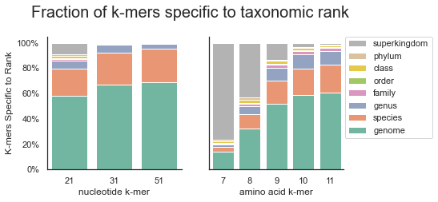
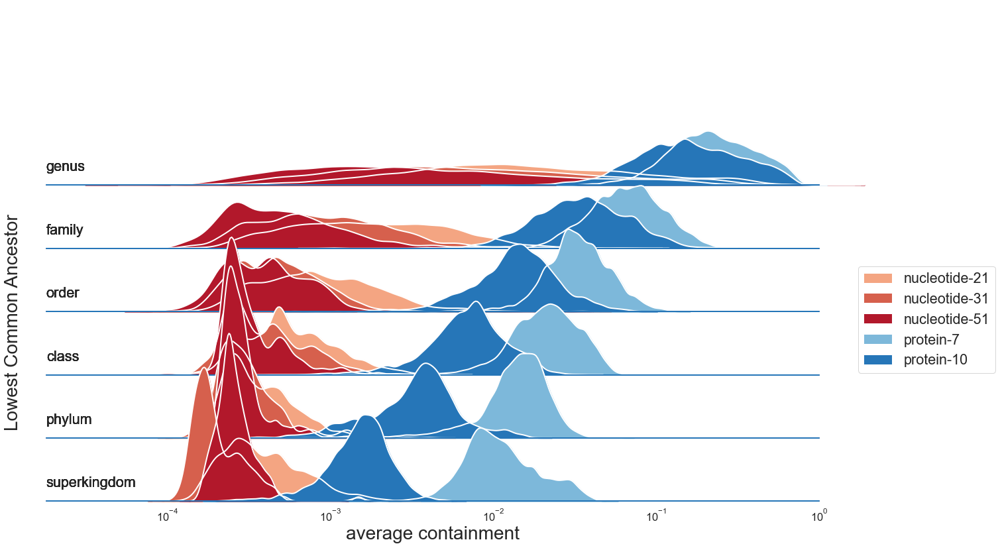
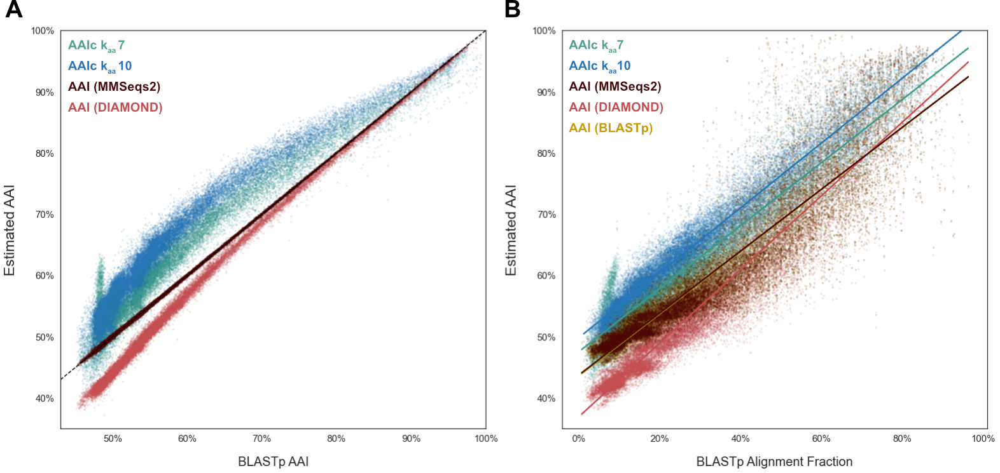
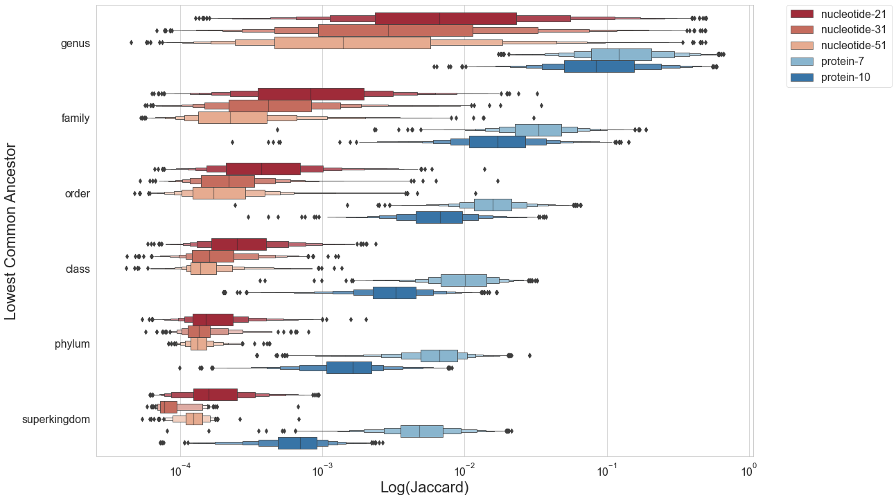

N. Tessa Pierce-Ward 0000-0002-2942-5331
· bluegenes
· saltyscientist
Department of Population Health and Reproduction, University of California, Davis
· Funded by NSF 1711984, NSF 2018911
Taylor E. Reiter 0000-0002-7388-421X
· taylorreiter
· ReiterTaylor
Department of Population Health and Reproduction, University of California, Davis
· Funded by Grant XXXXXXXX
C. Titus Brown 0000-0001-6001-2677
· ctb
· ctitusbrown
Department of Population Health and Reproduction, University of California, Davis
· Funded by Moore Foundation GBMF4551
Abstract
Background
Advancements in sequencing over the past decades have made it feasible to investigate the vast global diversity of microbial organisms via direct sequencing of environmental samples (metagenomics). These techniques have expanded and reshaped our understanding of evolutionary relatedness across the tree of life and allowed us to move beyond organismal isolates to investigate the structure and function of microbial communities (CITE).
Metagenomic analyses rely on our ability to make sense of bulk sequencing reads by assigning taxonomic and functional groupings.
However, the methods and databases used for characterization impact both the extent and accuracy of classification.
As the scale of genomic sequencing continues to grow, fast and low-memory methods for estimating sequence similarity have become critical for conducting tasks ranging from taxonomic classification to phylogenetic analysis on large-scale datasets [1,2].
However, many of these methods struggle with classification specificity, with some methods reporting false positive rates as high as 25% on short read metagenomic datasets prior to thresholding [3].
At the same time, classification techniques often can suffer from limited sensitivity when comparing highly polymorphic sequences or classifying organisms from groups underrepresented in reference databases.
For understudied and diverse habitats such as soil, metagenomic classification methods often only categorize a small fraction of metagenomic data, and even well-studied environments such as the human gut can produce significant uncharacterized metagenome content (CITE).
As protein sequence is more conserved than the underlying DNA sequence, protein-based comparisons have long been the gold-standard approach across larger evolutionary distances [4,5].
Protein-based metagenomics taxonomic classification approaches typically have increased sensitivity relative to nucleotide methods [6,7,8,9,10,11].
Whole-proteome relatedness indices such as Amino Acid Identity (AAI) can be used to determine whether uncharacterized sequences belong to known taxonomic groups or represent truly novel sequence.
As we continue to sequence more of the biosphere, there remains a need for fast and accurate alignment-free sequence comparison tools with protein-level sensitivity.
Alignment-free methods using k-mers, short sequences of length k, can quickly compare and classify metagenomic datasets particularly when used with subsampling methods such as MinHash [1] and FracMinHash [12].
While the majority of k-mer methods utilize nucleotide k-mers, amino acid k-mers (kaa-mers) have shown some promise for functional screening and annotation [11,13,ob_orpheum?].
Here, we show that kaa-mer comparisons robustly estimate Average Amino Acid Identity across large evolutionary distances, even while using FracMinHash k-mer subsampling methods.
We then use FracMinHash kaamer sketches to tackle two classification challenges: taxonomic classification of assembled genomes, and compositional analysis of metagenomes.
Our results suggest that kaamer sequence analysis can facilitate large-scale assembly-based and assembly-free metagenomic analyses, even when sequenced organisms are only distantly related to organisms available in reference databases.
Results
K-mer analysis methods enable similarity detection as low as a single shared k-mer between divergent genomes.
As a result, exact matching of long nucleotide k-mers has been used for taxonomic classification and similarity detection between closely related genomes (genus-level to strain-level comparisons using k-mer lengths between 21-51) [1,metapalette?].
At larger evolutionary distances, accumulated nucleotide divergence limits the utility of exact nucleotide k-mer matching.
Amino acid k-mers (kaa-mers) retain the benefits of fast, alignment-free exact k-mer matching, but with increased tolerance for evolutionary divergence.
Here, we evaluate the utility of amino acid k-mers for a wide range of genomic and metagenomic applications, including sequence distance estimation and taxonomic classification.
Amino Acid k-mers can be used to discriminate between taxa
The Genome Taxonomy Database (GTDB) provides a genome-similarity-based taxonomy for bacterial and archaeal genomes [14].
GTDB release rs202 encompasses 258,407 genomes from 47,895 species.
We begin by assessing the prevalance of nucleotide and amino acid k-mers of different k-mer lengths within assemblies included in GTDB.
To make analyses at this scale tractable, we use FracMinHash sketching to randomly subsample all available k-mers, retaining approximately 1/1000 nucleotide k-mers and 1/200 amino acid k-mers [12].
DNA FracMinHash sketches have been shown to representatively subsample genome datasets [12].
For most genomes, both genomic and protein fastas were available for download from NCBI.
In remaining cases (n=36,632), genome fastas were translated into protein sequence via Prodigal [15] prior to sketching.
We indexed these sketches into sourmash databases, which we have made available as part of the Prepared Databases section of the sourmash documentation, and archived on OSF [https://osf.io/t3fqa/].
For a range of nucleotide and amino acid k-mers lengths, we assessed the fraction of k-mers specific to each taxonomic rank.
For nucleotide k-mers, we used lengths of 21, 31, and 51, which are commonly used for analyses at the genus, species, and strain level, respectively. For amino acid k-mers, we focused on k-mer lengths ranging between k=7 and k=11, which roughly correspond to nucleotide k-mer lengths 21-31.
K-mers specific to a genome were only present in a single genome in the database; k-mers specific to a species were found in at least two genomes of the same species, etc. K-mers specific to a superkingdom were found in genomes/proteomes from at least two phyla.
Fraction of k-mers specific to taxonomic rank
For the GTDB-RS202 database, the majority of nucleotide k-mers are specific to (unique at) a specific genome, species, or genus. Few k-mers are shared across superkingdoms, though these do exist at a k-mer length of 21.
In contrast, all protein k-mer sizes contain a portion of k-mers that are shared across genera and above.
At a protein k-mer size of 7, over 80% of k-mers are present in genomes found in more than one phylum, while at a protein k-size of 10, the number of genome-specific k-mers is closer to that observed for nucleotide k-mers.
The differences observed between nucleotide and amino acid k-mers, as well as across different k-mer lengths suggests that these different k-mer sizes may provide resolution (CTB: do we want to say specificity here?) at different taxonomic ranks.
We choose amino acid k-mer lengths 7 and 10 for our primary analyses, and have set a default kaa-mer length of 10 within sourmash.
Evolutionary Paths Dataset
To rigorously assess the utility of protein k-mers for comparisons at an array of evolutionary distances, we selected a subset of GTDB genomes that would allow standardized comparisons across taxonomic ranks and overcome the database-inclusion limitations mentioned above.
For each genus with at least two species clusters in GTDB, one representative genome was randomly selected as an “anchor” genome.
Then, one additional genome was selected from the GTDB representative genomes matching the anchor’s taxonomy at each higher taxonomic rank.
This “evolutionary path” consists of seven genomes: an anchor genome, a genome matching anchor taxonomy down to the genus level, one matching anchor taxonomy to the family level, one matching to the order level, and so on.
This creates a gradient of similarity from genus to superkingdom.
Path selection using the representative genomes in GTDB rs202 resulted in 4095 paths comprised of 9213 unique genomes (8790 Bacteria, 333 Archaea).
These paths include genome comparisons across 40 phyla (36 Bacteria, 4 Archaea), covering roughly a quarter of the 169 phyla (149 Bacteria, 20 Archaea) in GTDB release rs202.
While paths are limited to taxonomies with at least two GTDB representative genomes for each taxonomic rank, these paths provide a rich resource for comparisons at increasing evolutionary distances.
For DNA comparisons, each genome was sketched from the available genome downloaded from genbank.
For protein comparisons, we conducted both protein comparisons and translated comparisons.
In both workflows, all anchor genomes were sketched from available proteomes (either downloaded or generated via Prodigal, as above).
For the direct protein assessment, comparison proteomes were also sketched from the available proteome.
For these sketches, k-mer containment results are equally valid in both directions, so we report the mean containment for the comparison alongside the Jaccard Index.
For the second workflow, comparison genomes were 6-frame translated to build protein kaa-mers.
As 6-frame translation introduces erroneous kaa-mers, we report only the containment estimate relative to the anchor proteome (CTB: perhaps note that the intuition here is that for long k, only correct k-mers will match).
We term this “anchor containment”, where the trusted genome is the “anchor” upon which we base the comparison.
We conduct k-mer comparisons using sourmash FracMinHash sketches default fractional scaling: 1/1000 k-mers from DNA sketches and 1/200 k-mers for protein sketches (including 6-frame translated sketches).
For amino acid k-mers, we focus on k-mer lengths k=7 and k=10, which are closest to nucleotide k-mer lengths 21 and 31.
To verify results and estimate the impact of FracMinHash scaling, we also conducted all comparisons using all available k-mers (no subsampling).
Protein k-mers facilitate alignment-free comparisons at increased evolutionary distances
We begin by assessing k-mer containment across the 6 comparisons (each genome compared with the anchor genome) within each of 4095 evolutionary paths.
When plotted by the rank of the lowest common ancestor, the dynamic range of containment values is much larger for kaa-mer comparisons.
While DNA k-mers can provide resolution at the genus level, log-transformed containment values for protein k-mers continue to decrease, providing resolution for comparisons even between genomes of different phyla.
Average containment estimated from proteome sequence is very similar to anchor containment estimated from 6-frame translation of genome sequence, suggesting that either value can be used for this type of comparison.
We obtained similar results when comparing all available k-mers, suggesting that these results are not affected by FracMinHash scaling (Supplemental Figure XX).
Figure 1:Protein k-mers are shared at higher taxonomic ranks Default scaled values 1000, 200
FracMinHash kaa-mer containment estimates average proteome identity and coverage
The Jaccard estimate from MinHash k-mer comparisons has been commonly transformed into “Mash Distance,” which estimates the rate of sequence mutation under a simple evolutionary model assuming equal and random nucleotide substitution at any position across a genomic sequence [1,16].
Despite potential issues with assuming such a simple mutational model, Mash Distance estimates have been shown to be reliable for high quality genomes with high similarity (>90% ANI), and have permitted sequence distance estimation at much larger scales than is tractable for traditional alignment-based sequence identity estimation [1,11,17]..
Compared with Jaccard, the Containment Index permits more accurate estimation of genomic distance, particularly for genomes of very different lengths [11,18,19].
As we recently described ([20]), we can use the same simple mutational model to obtain a point estimate of sequence identity between two genomes.
This estimate is highly correlated with mapping-based Average Nucleotide Identity (ANI) estimates even when using only a small fraction of k-mers (e.g. fractional scaling = 1/1000) [20].
When FracMinhash sketches are instead generated with kaa-mers, we can use a similar approach to estimate average amino acid identity (AAI) between two proteomes.
Traditional AAI represents the average amino acid identity of all genes shared between two proteomes, and has shown lasting utility for phylogenomic comparisons and taxonomic classification [21,22].
However, alignment-based AAI analyses not tractable for large-scale comparisons.
Under a simple mutational model assuming equal and random amino acid substitution at any position across a proteome, we can use the Fractional Containment Index \({C_\text{frac}(A,B)}\) (estimated at kaa-mer length \(k~aa~\)) to obtain a containment-based estimate of Amino Acid Identity (\(cAAI\)).
As with nucleotide k-mer comparisons, we also derive confidence intervals around this point estimate to account for the variance of FracMinHash subsampling (see Methods and [20] for details).
\(cAAI = {C_\text{frac}(A,B)}^{1/k~aa~}\)
To assess the utility of \(cAAI\) for phylogenetic comparisons, we tranform the kaamer containment values of the “Evolutionary Paths” dataset (above) to \(cAAI\) values.
For each pairwise comparison, we then also estimate AAI with programs leveraging three different alignment algorithms: EzAAIb (BLASTp), EzAAIm (MMSeqs2), and CompareM (DIAMOND).
As BLAST-based alignment remains the gold-standard method, we compare each AAI and \(cAAI\) value to the AAI values generated with EzAAIb’s BLASTp approach.
Figure 2: FracMinHash cAAI vs BLASTp alignment-based AAI
When compared with alignment-based AAI (Figure 3A), \(cAAI\) is more sensitive, finding increased similarity across the entire range of comparisons.
Across much of the AAI range, kaa7 \(cAAI\) is closer to AAI thank kaa10, but kaa7 \(cAAI\) values become unreliable at the low end of AAI range, with a spike in \(cAAI\) values observed below 50% AAI.
This suggests that kaa7 containment does not provide sufficient resolution to distinguish protomes in the 40-60% AAI range.
In contrast, despite their difference from AAI, kaa10 $cAAI values provide resolution across the full range of pairwise comparisons.
The three alignment-based methods are highly correlated, though DIAMOND-based AAI estimates consistently underestimate proteome similarity, particularly at the lower end of the range.
Unlike traditional AAI methods, \(cAAI\) makes no attempt to identify the best reciprocal matches between genes found in each proteome.
\(cAAI\) is based entirely on containment, the fraction of k-mers found in each proteome that is shared with the comparison proteome.
When we instead compare AAI and \(cAAI\) values to the BLASTp-reported alignment fraction, we see that \(cAAI\) kaa10 is best correlated with alignment fraction (R2=0.94).
Again, kaa7 loses resolution for highly divergent proteomes.
For alignment-based methods, we observe a slightly lower correlation between alignment fraction and AAI (R2: 0.92 BLASTp, 0.86 MMSeqs2, 0.89 DIAMOND).
This can be both a strength and shortcoming of AAI as a method, as AAI values only consider the alignable fractions of the two proteomes.
Given these propeties, containment-based \(cAAI\) is closest to an alignment-adjusted version amino acid identity.
While it does not exactly mimic alignment-based AAI estimates, it is able to represent both alignment fraction and identity information in a single value.
AAI has been shown to be a robust measure of overall pairwise relatedness even for highly incomplete datasets, such as those comprised of only ~4% of the genome or 100 genes [21,22].
AAI is most useful when nucleotide comparisons are not longer robust, typically less than ~80% nucleotide identity.
AAI from 6-frame translated sequences
As above, we utilize anchor containment for comparisons involving 6-frame translated sketches.
Protein k-mer containment and AAI can be used for taxonomic classification
Given that protein k-mers facilitate similarity estimation across these larger evolutionary distances, we next assess the utility of protein k-mers for taxonomic assignment, both for metagenome breakdown/classification and for assembled genomes.
Metagenome breakdown using protein k-mers
As developed in Irber et al., 2022 [12], minimum set cover of nucleotide k-mers can be used to find the set of genomes that cover all known k-mers in a metagenome.
This approach, implemented in sourmash gather, works by using k-mer containment relative to reference genomes (“anchor containment”, as above) and “assigning” metagenome k-mers iteratively to the reference genome with highest containment.
Anchor containment is then re-estimated using the remaining unassigned query k-mers until all known k-mers have been assigned.
This step provides us with an ordered list of reference genomes, each of which represent a non-overlapping portion of the metagenome.
The taxonomy of these matched reference genomes thus represents the closest match for each of these non-overlapping portions of the metagenome.
In addition to reporting these exact matches, we can aggregate these taxonomic assignments of these matches to obtain taxonomic summarization at each rank.
Here, we assess the utility of protein k-mers for this application using the same metagenome samples described in Irber et al., 2022 [12].
As metagenome samples are unassembled, we use the 6-frame translation approach described above to obtain protein k-mers for comparison.
No modification to the min-set-cov approach is required, as it already relies upon anchor containment to the reference genomes.
do we need an additional metagenome w/more divergent genomes, to show advantage of protein methods?
Robust taxonomic classification from protein k-mers
We use a similar approach for taxonomic classification of assembled genomes from protein k-mer containment.
We apply the same minimum set cover approach to find the set of reference genomes that cover all known k-mers in our sample (in this case, a genome itself rather than a metagenome).
If the most contained reference genome is sufficiently similar (passes default or user-defined threshold) to our query, we can annotate the query with taxonomic information from this reference genome.
If not, we can use the genome-based lowest common ancestor approach to classify the query genome to the taxonomic rank where it contains sufficient similarity to matched reference genome sequence.
We select two sets of genomes: first, a set of 1000 genomes from the MGNify project (“MGNify-1000”), which are assembled from human gut and likely to be well-represented in existing databases.
We next choose a set of 885 microbial (“Delmont-885”; 820 Bacteria, 65 Archaea) metagenome-assembled genomes (MAGs) assembled from TARA Oceans metagenomes [23].
As the marine environment is understudied relative to human gut, these genomes are more challenging for classifiers as they are less likely to have close relatives available in reference databases.
To assess the utility of protein k-mers for genome classification, we conduct this classification using three k-mer approaches: direct nucleotide k-mers, 6-frame translated protein k-mers, and direct protein k-mers from prodigal-translated proteomes. Where reference taxnonomic lineages were available (MGNify-1000), we compared our results directly to these annotations. With experimental genomes where no reference taxonomic lineage is available, we assessed our annotation relative to gtdb-tk classification [24].
Dataset
Exact Match
Higher Rank
Unclassified (sourmash)
Unclassified (GTDB-Tk)
MGNify-1000
95.7%
4.3%
N/A
N/A
Delmont-885
73.5%
26.5%
1 (0.1%)
15 (1.7%)
to do:
- discuss/utilize AAI threshold at all?
Notes
Include Jaccard –> AAI results anywhere?
- FracMinHash AAI values produced by Jaccard and Containment (here, average containment) methods are very similar.
Discussion
Protein sequences are more conserved than their underlying DNA sequence, allowing amino acid k-mer comparisons to match across larger evolutionary distances.
Protein sequence matching is also less impacted by sequencing errors due to codon degeneracy.
Our results show that amino acid k-mers can be used for global proteome comparisons, including estimation of sequence similarity (AAI) and taxonomic classification from either unassembled read datasets or assembled proteomes.
kaamer Containment comparisons enable alignment-free and assembly-free protein comparisons
As the majority of genome and proteome data is sequenced at the nucleotide level, comparisons of amino acid sequence are typically limited to assembly-based workflows, where a genome assembly has been translated into predicted Open Reading Frames (ORFs).
As amino acid kaamers do not utilize any additional assembly information, we can also conduct comparisons directly from read datasets, bypassing assembly altogether.
In many cases, we are interested in comparing a novel sequencing dataset to one or more reference proteomes.
In this case, 6-frame translation of read sequences is sufficient for accurate comparisons to a kaamer database generated from reference (assembled) proteome data.
This method relies on the biological properties of kaamers: not all potential kaamers are represented in biological databases, particularly at longer kaamer lengths such as kaa7 and kaa10 (info theory paper).
Containment comparisons allow us to focus only on the translated read kaamers that match to the reference database, ignoring the 5/6ths of kaamers that will originate from incorrect reading frames.
When using assembled genomes as a test case, our results show that this 6-frame translation method performs equally well when compared with generating kaamers from the corresponding Prodigal-translated or RefSeq-downloaded proteomes.
By using only the k-mer containment estimate relative to reference proteomes, we can obtain accurate Amino Acid Identity estimates directly from DNA sequence.
In this way, we can use the more permissive nature of protein analyes for assembly-free genome and metagenome assignment and comparisons.
Of course, when both samples are proteomes that are equally trusted (e.g. neither set of protein k-mers is being 6-frame translated from genome sequence), then the average containment considers the entire set of protein sequence from both proteomes.
kaa10 enables whole-proteome comparisons out to domain-level
Selection of kaamer size is critical for the utility of these comparisons.
Longer kaamer lengths (kaa=10) provide sufficient resolution for comparisons across taxonomic groups, including out to comparisons between genomes in different domains.
In contrast, shorter kaamer lengths (kaa=7) are more likely to be shared across taxonomic groups, with the majority of unique kaa7mers shared across phyla within GTDB.
These k-mers lose resolution at wider evolutionary distances (<62% AAI), where insufficient kaamers are unique to each taxonomic group to allow for taxonomic classification and robust similarity estimation via kaamer containment.
However, this property can be advantageous for functional similarity estimation, where kaa7mers may provide the ability to match gene sequence even across wider evolutionary distances.
Indeed, this functionality has already begun to be explored, with k~aa7-mer functional annotation server [13].
FracMinHash kaa-mer sketches support whole-proteome analysis at scale
All of the kaamer methods described here function with all dataset kaamers.
However, our results show that leveraging sketching methods such as FracMinHash and that retain as few as 5% of microbial proteome k-mers (\(scaled=200\)) maintains accuracy of kaamer containment comparisons while reducing runtime, memory, and storage requirements.
Smaller proteomes such as viral proteomes and read-level or contig-level analysis may require different fractional scaling or different approach to ensure sufficient kaamers for accurate comparisons.
While we have focused on FracMinHash sketching, these kaamer comparisons can be used with any sketch that enables containment estimation.
Comparisons between sets of similar sizes or without 6-frame translation of protein k-mers can also use Jaccard to estimate \(cAAI\), though Containment comparisons will always be as or more accurate than Jaccard comparisons [20].
\(cAAI\) estimates Amino Acid Identity and Alignment Fraction
Amino Acid Identity (AAI) is a measure of average protein similarity between the homologous regions of two proteomes.
Traditional AAI methods use BLAST or BLAST-like alternatives to identify homologous fragments for comparison.
K-mer Jaccard and containment have been used for estimating average nucleotide identity between genomes [1,16,20].
While several studies have proposed utilization of more complex evolutionary models, the simple mutational model seems to closely approximate alignment-based estimtates of Average Nucleotide Identity (ANI) [20].
Applying this same simple mutational model to amino acid kaamer containment yields \(cAAI\) values that strongly correlate with alignment-based AAI values.
For many alignment-based AAI approaches, it is important to report both the percent identity of matched regions and the fraction of the genomes that were mapped.
This prevents believing artificially high similarity values when only small fractions of the genomes overlap.
While alignment \(AAI\) measure sequence similarity, $kaamer containment, the fraction of shared dataset $kaamers, is closer to a proxy for the fraction of shared proteome.
Indeed, \(cAAI\) is strongly correlated with the alignment fraction reported by BLASTp AAI (as executed by EzAAI [25]), suggesting that \(cAAI\) represents an aggregated similarity measure that encompasses both amino acid similarity and the fraction of shared protein sequence.
$Kaamer length selection remains critical, as discussed for direct kaamer Containment comparisons.
while \(k~aa7~ cAAI\) is more closely related to BLASTp values, kaamer similarity saturates at distances greater than ~65% AAI.
While \(cAAI~kaa10~\) are slightly offset from traditional \(AAI\) values, kaa10 comparisons enable consistent whole-proteome similarity estimation even out to the widest evolutionary distances.
As with Average Nucleotide Identity comparisons, different AAI approaches vary slightly in the AAI reported for a given pair of proteomes, suggesting that comparisons are best made between values produced by the same method [26].
The majority of AAI estimation software has focused been alignment-based comparisons, which has limited comparisons at scale.
Larger-scale comparisons have leveraged similarity estimation across single-copy universally conserved genes [27].
A recent extension of this concept introduced \(\widehat{AAI}\) which can use tetramer frequency of universal single-copy proteins to obtain an estimate of AAI.
Recent introduction of AAI proxy estimation via single-copy protein tetramers (\(FastAAI)\) provides a promising alternative that enables AAI estimation for hundreds of thousands of comparisons [28].
FracMinHash kaamer subsampling allows \(cAAI\) to operate at a similar scale while encompassing information from across the whole proteome and allowing estimation directly from read datasets.
Whole proteome kaamer comparisons average information across fast and slow-evolving genes, do not require prior selection of appropriate universal protein sets, and have the advantage of being assembly-agnostic.
However, speed of these comparisons depends on the FracMinHash kaamer subsampling rate.
For GTDB-wide comparisons, FracMinHash subsampling of XX% of kaamers per proteome allowed XXX,XXX pairwise comparisons in XX time.
kaamer Taxonomic Assignment is database-dependent
(but protein helps with sensitivity + min-set-cov helps with specificity)
K-mer based taxonomic assignment relies upon matching k-mers found in previously sequenced reference proteomes.
While this approach will always be database-dependent and improved by presence of closely-related proteomes in the database, protein-based matching allows for classification at larger evolutionary distances.
While protein matching increases the sensitivity by matching across synonymous substitutions in the DNA sequence, classification LCA approaches often suffer from sensitivity/specificity trade-offs.
Here, the use of sourmash gather minimum set cover approach assigns each protein k-mer to its most likely/parsimonious match based on presence of other proteome k-mers present in the query genome/metagenome.
We expect classification at the amino acid level to be most useful for organisms not well represented in reference databases.
In these cases, the increased sensitivity of kaamers can find any available similarity in the database.
While this similarity may not be sufficient to provide a species or even genus-level annotation, even higher-level taxonomic information can be useful when attempting to understand and classify novel metagenomic samples.
Limitations
While kaamer containment allows protein analysis directly from DNA reads, it cannot be used for comparisons between two 6-frame translated datasets.
In this case, there is no way to distinguish between true biological kaamers and noisy kaamers introduced by translation into all potential open reading frames.
AAI is often most useful when comparing to known or assembled genomes, and does not have a direct application for comparisons between two unassembled metagenomic datasets.
If desired, it is possible to use a kaamer Containment strategy to select the most likely translation frame for each read, which can be used for downstream analyses.
If instead, kaamers are generated for each translation frame of each read separately, Containment comparisons can again be used to find the fraction of these kaamers that can be matched to the kaamers in the reference database.
The translation frame with the highest percent of matched kaamers is most likely to be the coding frame for that read.
These strategy can also be used to predict non-coding reads, where few, if any, translated kaamers match to reference database kaamers.
This method works best when there are closely related organisms present in the reference database ([29]; [30]).
Future directions and utility
functional comparisons
abundance comparisons with cosine, f_unique_weighted
clustering at protein level
While eukaryotic datasets are out of scope of this paper, these methods should work well
Conclusions
Protein search has long been used for comparisons conducted at increased evolutionary distances.
Using genomes from the Genome Taxonomy Database (GTDB) we showcase the utility of amino acid kaa-mer comparisons for alignment-free and assembly-free proteome similarity estimation and taxonomic classification.
Subsampling kaamers using FracMinHash sketching makes global protein similarity assessment tractable for the current scale of sequencing.
Methods
Large-scale k-mer comparisons with FracMinHash sketches
FracMinHash sketching, as implemented in sourmash [12,31,32], is a MinHash variant that uses a scaling factor to subsample the unique k-mers in the dataset to the chosen fraction (1/scaled).
As k-mers are randomized prior to systematic subsampling, FracMinHash sketches are representative subsets that can be used for comparisons across datasets sketched with consistent k-mer lengths and scaling factors.
While FracMinHash sketches can be used to estimate both the Jaccard Index [1] and Containment Index [18], containment has been shown to permit more accurate estimation of genomic distance when genomes or datasets differ in size [18,19,33,34].
We focus here on the utility of containment comparisons for similarity estimation.
Containment comparisons are directional: the containment of genome A in sample B is the interection of k-mers in A and B divided by the k-mers in genome A (and vice versa).
Thus, two containment values can be estimated for a given pairwise comparison.
The choice of which containment value to use (or whether to average the two values) depends on the particular comparison.
FracMinHash containment has been shown to be an unbiased estimator of the true containment index, as long as the sketches contain sufficient k-mers for comparison or utilize a high-quality estimation of the true cardinality of the dataset [12,20].
Sourmash supports sketching from either nucleotide or protein input sequence, to generate either nucleotide or protein FracMinHash sketches.
We generated nucleotide and protein sketches directly from genome and protome files, respectively.
All genome sequences were sketched with sourmash v4.2.1 using the sourmash sketch dna command, k-mer sizes of 21,31,51, a scaling factor of 1000.
All proteome sequences were sketched with sourmash v4.2.1 using the sourmash sketch protein command at protein k-sizes (kaa-mer sizes?) of 7-12 and a scaling factor of 200.
Sourmash also supports 6-frame translation of nucleotide sequence to amino acid sketches.
To assess the utility of these translated sketches, genome sequences were also sketched with the sourmash sketch translate command at protein k-sizes (kaa-mer sizes?) of 7-12 and a scaling factor of 200.
In select cases, we also conducted comparisons using all available k-mers, rather than using FracMinHash sketch subsampling.
While sourmash sketching is not optimized for this use case, we can generate these complete k-mer sketches using the same sourmash commands with a scaling factor of 1 (scaled=1).
Anchor Containment analysis for protein comparisons directly from DNA sequence
For protein k-mer comparisons to be useful, any DNA queries must be translated into protein sequence.
This typically limits amino acid comparisons to assembly-based workflows, as assemblies can be reliably translated into predicted Open Reading Frames (ORFs).
With k-mer methods, we can utilize direct 6-frame translation, which is assembly-free but does not attempt to find the correct open reading frame.
Assuming a single open reading frame, only ~1/6th of the k-mers generated by 6-frame translation will belong to true ORFs.
The remaining erroneous k-mers greatly impact the Jaccard Index (set similarity) when comparing samples, but only impact the containment index in one direction (relative to the 6-frame translated set).
The containment estimate relative to reference proteomes will be an accurate comparison directly from DNA sequence.
We term this “anchor” containment, where the trusted genome is the “anchor” upon which we base the comparison.
Since 6-frame translation should always yield excess k-mers relative to genomes of similar size, this desired containment will generally be the larger of the two containment values (maximum containment).
To facilitate these comparisons within sourmash, we have implemented “maximum containment,” a shorthand method to select the greater of the two containment values. The maximum containment method may also provide advantages for genomes with potential contamination, as containment will always be relative to the smaller, and presumably less contaminated, genome. However, highly incomplete genomes may overestimate similarity with this method, so we suggest using containment relative to the more trusted sample if known, or considering both containment values when comparing two genomes of approximately equal quality.
Note that comparing two 6-frame translated datasets is not recommended, as there is no mechanism to exclude erroneous k-mers introduced during translation.
Estimating Average Amino Acid Identity
MinHash Sketch Jaccard has been shown to correlate well with ANI at high sequence identities (>=90% sequence identity) [1].
Recently, Blanca et al, 2021 [35] presented a method to increase the accuracy of sequence similarity estimation from MinHash Jaccard by recognizing that k-mers generated from mutated sequence are not independent.
Hera et al, 2022 [20] extended this approach to estimate sequence identity from FracMinHash Containment estimates.
Each of these methods assumes a simple mutational model, with equal substitution probability for each nucleotide, and then estimates sequence identity based on k-mer comparisons.
Here, we note that there is nothing unique to nucleotide sequence included in these equations.
By applying the same equations to comparisons between amino acid k-mer sketches, we can estimate average Amino Acid Identity (AAI) between proteomes.
For this application, we maintain the assumption of a simple mutational model of equal substitution probability at each position, but recognize that it now applies to any amino acid, rather than any nucleotide.
We provide an implementation of Fractional Containment to average sequence identity (ANI/AAI) in the software package sourmash, which is implemented in Python and Rust and developed under the BSD license [31,32].
ANI and AAI values can be reported from sequence comparisons
The distance estimation equations can be found in the distance_utils.py file and ANI/AAI values can be reported from a variety of sourmash comparison and search commands as of version 4.4.
sourmash is available at github.com/sourmash-bio/sourmash.
The results in this paper were generated with sourmash v4.4.1.
FracMinHash Amino Acid Identity Correlates with Alignment-based Methods
To assess whether k-mer methods can be used to approximate AAI, we ran generated alignment AAI values for each pairwise comparison using methods that leverage different mapping algorithms: EzAAIb (BLASTp), EzAAIm (MMSeqs2), and CompareM (DIAMOND). As BLAST-based alignment remains the gold-standard method, we compare all AAI values the BLAST AAI values.
EzAAI v1.12 [doi? 10.1007/s12275-021-1154-0] was used to run BLAST-based and MMSeqs-based Amino Acid Identity. The EzAAI workflow begins with PRODIGAL-based translation of genome sequence [5], followed by reciprocal BLAST [doi? 10.1016/S0022-2836(05)80360-2] or MMSeqs2 [36] alignment. For both, we utilized EzAAI default parameters: 40% coverage threshold, 40% sequence identity threshold.
CompareM v0.1.2 ([37]; run with --sensitive parameter for DIAMOND mapping) was used to obtain Average Amino Acid Identity between the anchor proteome and each additional proteome in its evolutionary path.
CompareM reports the mean and standard deviation of AAI, as well as the fraction of orthologous genes upon which this estimate is based.
Briefly, CompareM calls genes for each genome or proteome using PRODIGAL [5] and conducts reciprocal best-hit mapping via DIAMOND [15].
By default, CompareM requires at least 30% percent sequence identity and 70% percent alignment length to identify orthologous genes.
As DIAMOND alignment-based homology identification may correlate less well with BLAST-based homology under 60% sequence identity [38/], we also ran compareM with a percent sequence identity threshold of 60% to obtain a set of high-confidence orthologous genes for AAI estimation. We report correlation between FracMinHash AAI estimation and each of these compareM parameter sets in XX (TBD). CompareM was also used to obtain AAI values directly from each genome, using PRODIGAL to translate sequences prior to gene calling. These results [were not significantly different from proteome-based AAI estimation??] (Supplemental XX).
Taxonomic Classification with Sourmash Gather and Taxonomy
To take advantage of the increased evolutionary distance comparisons offered by protein k-mers, we apply compositional analysis with sourmash gather [12] to protein sequences (amino acid input and 6-frame translation from nucleotides).
Sourmash gather is conducted in two parts: first (preselection), gather searches the query against all reference genomes, building all genomes with matches into a smaller, in-memory database for use in step 2.
Second (decomposition), gather does iterative best-containment decomposition, where query k-mers are iteratively assigned to the reference genome with best containment match.
In this way, gather reports the minimal list of reference genomes that contain all of the k-mers that matched any reference in the database.
For queries with high sequence identity (ANI) to reference matches, we classify the query sequence as a member of the reference taxonomic group, as in [12].
However, when ANI between the query and the top reference match exceeds the taxonomic rank threshold (e.g. species default 95%), we use a least/lowest common ancestor (LCA) approach to report likely taxonomy at a higher taxonomic rank.
Briefly, as gather reports non-overlapping genome matches, we can sum the k-mer matches for all genomes with shared taxonomies at the next higher taxonomic rank to report the best query containment at that rank.
As this gather-LCA approach first uniquely assigns k-mers to their best reference genome, it bypasses the impact of increasing database size on taxonomic assignment observed for other LCA-based k-mer classification approaches [39].
These taxonomic utilities are implemented in the sourmash taxonomy module, and classifications were run on gather output via sourmash tax genome.
Workflows and Computing Resources
Reproducible workflows associated with this paper are available at https://github.com/bluegenes/2022-protein-kmers-workflow (ADD DOI for release), with datasets available at OSF (XX). All workflows were executed using snakemake >= 5.26 [40)] on the FARM cluster at UC Davis, using practices outlined in [41].
Supplemental
Protein k-mers facilitate alignment-free comparisons at increased evolutionary distances
JACCARD: Protein k-mers are shared at higher taxonomic ranks Default scaled values 1000, 200Protein k-mers are shared at higher taxonomic ranks: ALL KMERS
Figure 3:FracMinHash AAI vs CompareM Scaled 1
References
1.
Mash: fast genome and metagenome distance estimation using MinHash
Brian D Ondov, Todd J Treangen, Páll Melsted, Adam B Mallonee, Nicholas H Bergman, Sergey Koren, Adam M Phillippy
Single-cell transcriptomics for the 99.9% of species without reference genomes
Olga Borisovna Botvinnik, Venkata Naga Pranathi Vemuri, NTessa Pierce, Phoenix Aja Logan, Saba Nafees, Lekha Karanam, Kyle Joseph Travaglini, Camille Sophie Ezran, Lili Ren, Yanyi Juang, … CTitus Brown
Beware the Jaccard: the choice of <b>similarity measure</b> is important and non-trivial in genomic colocalisation analysis
Stefania Salvatore, Knut Dagestad Rand, Ivar Grytten, Egil Ferkingstad, Diana Domanska, Lars Holden, Marius Gheorghe, Anthony Mathelier, Ingrid Glad, Geir Kjetil Sandve
Felix Mölder, Kim Philipp Jablonski, Brice Letcher, Michael B Hall, Christopher H Tomkins-Tinch, Vanessa Sochat, Jan Forster, Soohyun Lee, Sven O Twardziok, Alexander Kanitz, … Johannes Köster